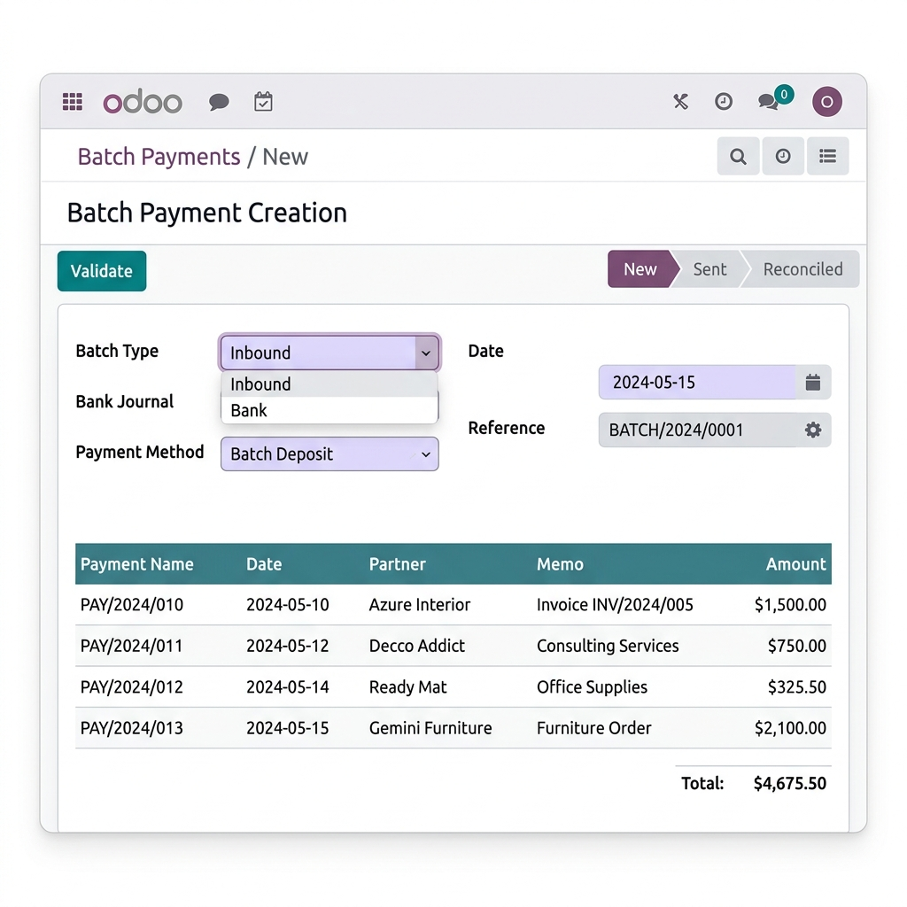
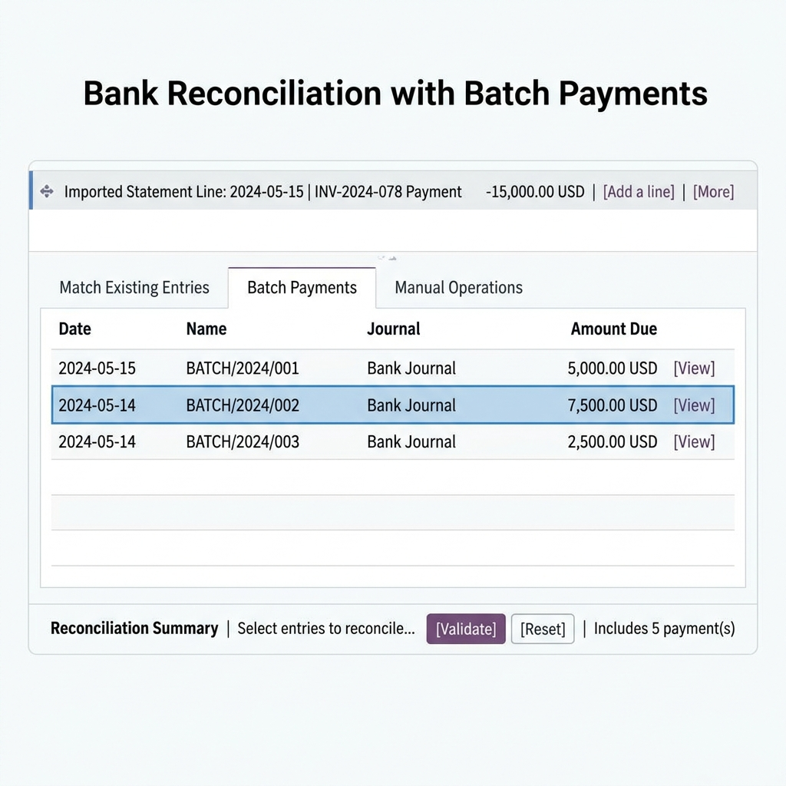
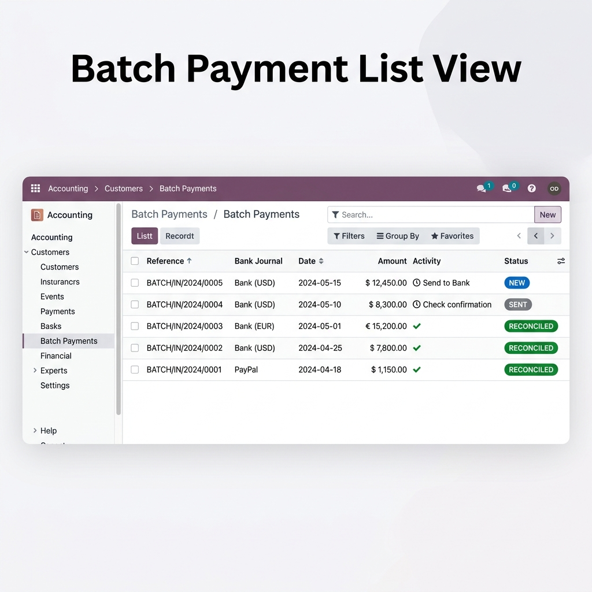

Bring Enterprise-grade Batch Payment functionality to Odoo 18 Community Edition. Group payments, reconcile in one click, and streamline your bank operations — all without upgrading.
✓ 100% Free & Open Source (LGPL-3)In Odoo Enterprise, Batch Payments let you group multiple customer receipts or vendor payments into a single bank deposit. This module brings that exact same power to Community users running AT Accounting.
Bundle cheques, transfers, or receipts into a single batch before depositing to the bank.
Match entire batches against bank statement lines directly from the reconciliation widget.
Enterprise-level feature, completely free. LGPL-3 licensed, no hidden charges.
Create and manage Inbound (customer receipts) and Outbound (vendor payments) batches with a clean, professional form view:

The crown jewel of this module — a dedicated "Batch Payments" tab inside the AT Accounting bank reconciliation widget:

Manage all your batches from a clear, organized list view with full status tracking:

Record individual customer receipts or vendor payments as usual.
Group payments into a batch — matching what you deposit at the bank.
Validate the batch. Payments marked as sent. Print or export for the bank.
In bank reconciliation, match the batch in one click — done!
| Technical Name | at_accounting_batch_payment |
| Version | 18.0.1.0.0 |
| License | LGPL-3 (Free & Open Source) |
| Odoo Version | 18.0 |
| Dependencies | AT Accounting, Batch Payment (base) |
| Auto Install | Yes — installs automatically when both dependencies are present |
Our team at Digitz Technologies specializes in Odoo ERP solutions. We're ready to help you customize, integrate, and optimize your accounting workflows.
Contact Support📧 support@digitz.ae | 🌐 digitz.ae